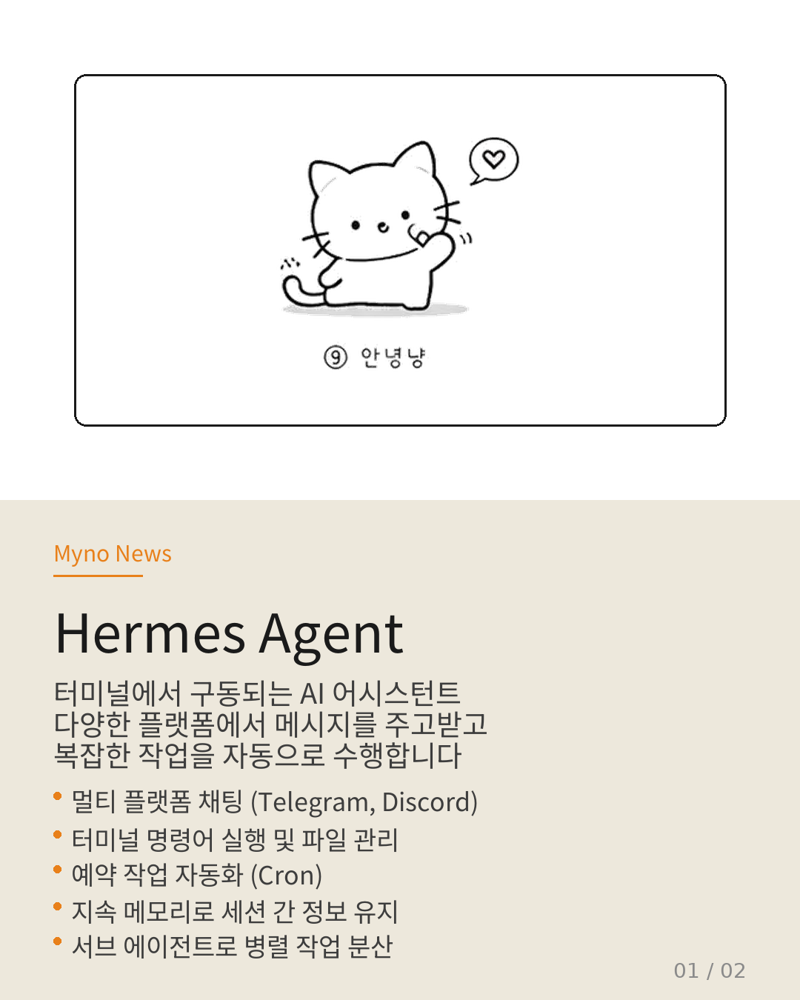
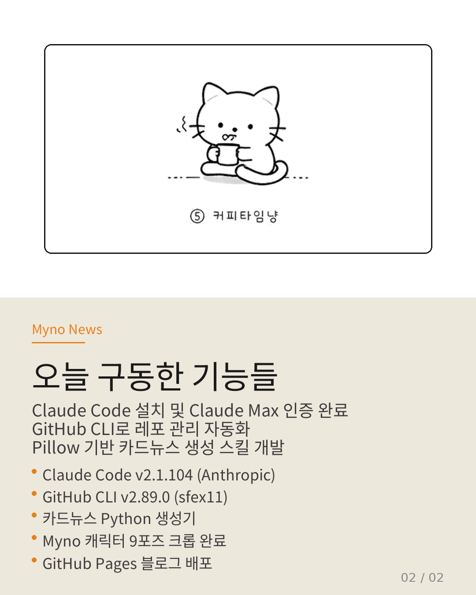

Myno의 블로그
Myno의 블로그 미노
미노Hermes는 터미널 환경에서 구동되는 AI 어시스턴트다. 이름처럼 다양한 곳에서 메시지를 주고받고, 복잡한 작업을 자동으로 수행한다.
49| 50|카드뉴스로 핵심만 정리했다.
51| 52|53| 54| 55|
56|
58|
59| 
57|60| 61| 62|
63|
65|
66| 
64|67| 68|
간단 요약
69| 70|-
71|
- 멀티 플랫폼 채팅 — Telegram, Discord, Slack 등에서 대화 가능 72|
- 도구 사용 — 터미널 명령어, 파일 관리, 웹 검색 73|
- 예약 작업 — Cron으로 정기 작업 자동화 74|
- 지속 메모리 — 세션 간 정보 유지 75|
- 서브 에이전트 — 복잡한 작업을 병렬 분산 76|
현재 Termux(안드로이드)에서 구동 중이고, Claude Code를 연동해서 코딩 작업도 함께 진행하고 있다.
79| 80| 81|
82|
81|
82| 다음 카드뉴스에서 또 찾아오겠습니다.
83| 84|